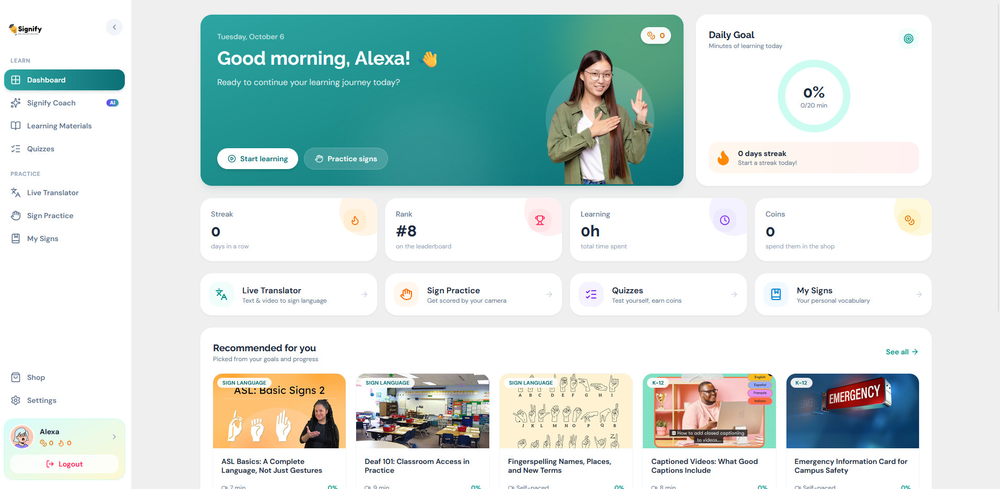

Learn · Fitur 01
Dashboard Pusat belajar harian

Halaman pertama setelah masuk. Dashboard merangkum progres belajar dan mengarahkan pengguna ke langkah berikutnya, sesuai tujuan yang dipilih saat onboarding: akademik, karier, atau presentasi.
- Daily Goal: target menit belajar per hari, lengkap dengan streak harian.
- Ringkasan streak, peringkat leaderboard, total waktu belajar, dan koin.
- Pintasan ke semua fitur dan rekomendasi materi sesuai tujuan dan progres.